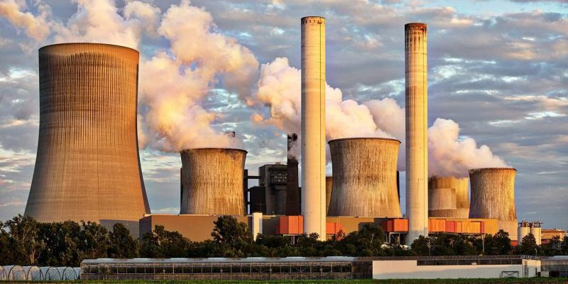
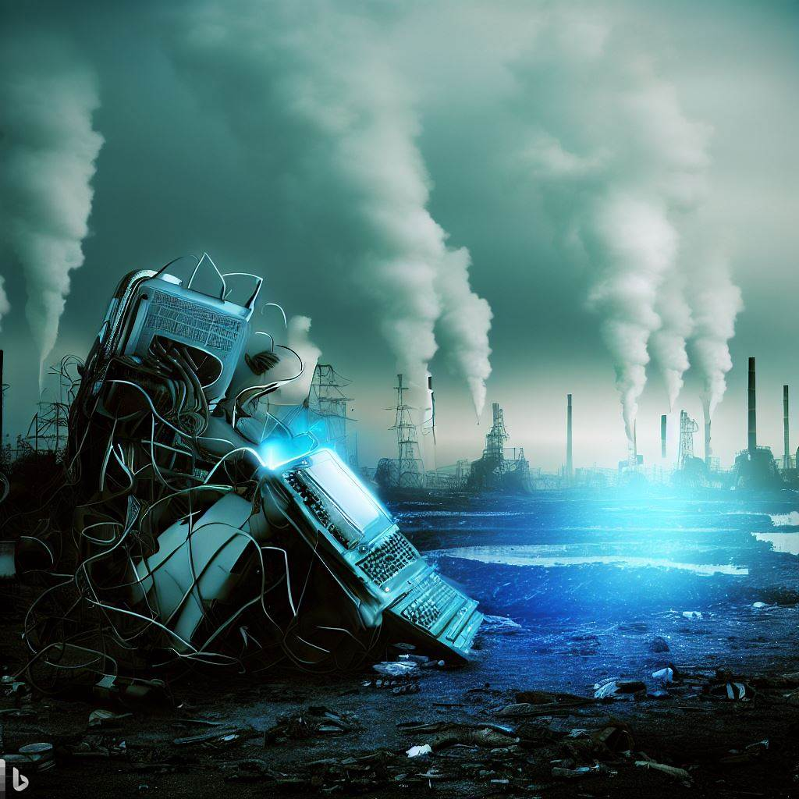

🌍 Contaminación ambiental

La contaminación ambiental es la introducción de sustancias o energía que provocan efectos negativos en el medio ambiente y la salud de los seres humanos.
Este problema afecta al aire, al agua y al suelo. En gran parte es causado por las actividades humanas como las fábricas, el transporte, el uso de combustibles fósiles y la mala gestión de los residuos.
Existen distintos tipos de contaminación: atmosférica, hídrica, del suelo, lumínica y sonora, cada una con efectos específicos sobre los ecosistemas y la vida cotidiana de las personas.
Impacto de la informática

La producción de dispositivos electrónicos requiere energía y recursos naturales, generando emisiones contaminantes. Además, los centros de datos consumen mucha electricidad para almacenar información y mantener funcionando internet.
Cuando los ordenadores, móviles o tablets dejan de usarse y no se reciclan correctamente, se convierten en residuos electrónicos que pueden contaminar el medio ambiente debido a los materiales tóxicos que contienen.
Entre los impactos más importantes de la tecnología en el medio ambiente están:
- Contaminación por metales pesados: Plomo, mercurio y cadmio presentes en componentes electrónicos pueden filtrarse al suelo y agua.
- Contaminación energética: Los centros de datos consumen gran cantidad de electricidad, muchas veces generada por combustibles fósiles.
- Plásticos y químicos difíciles de degradar: Retardantes de llama y microplásticos afectan a la fauna y flora cuando no se gestionan correctamente.
Para reducir este impacto, es importante reciclar los dispositivos, prolongar su vida útil mediante reparaciones o actualizaciones, y optar por productos electrónicos certificados como ecológicos o de bajo consumo.
Consecuencias
- Contaminación del aire
- Contaminación del suelo
- Daños en los ecosistemas
- Impacto en la salud humana
- Pérdida de biodiversidad
La acumulación de residuos y la contaminación afectan a los ecosistemas naturales, provocando la desaparición de especies y problemas de salud en las personas. La exposición prolongada a metales pesados y químicos presentes en la electrónica puede causar enfermedades respiratorias, problemas neurológicos y daños a órganos vitales.
Concienciarse sobre estos problemas y aplicar buenas prácticas de reciclaje y eficiencia energética es clave para proteger nuestro planeta y la salud de las generaciones futuras.